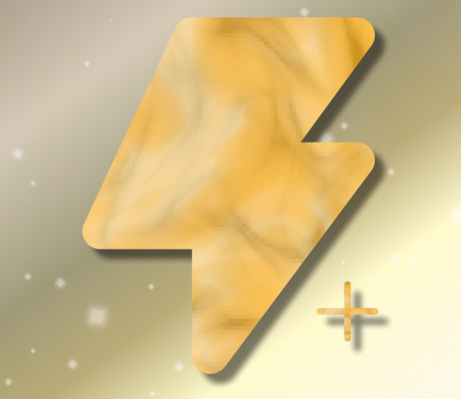
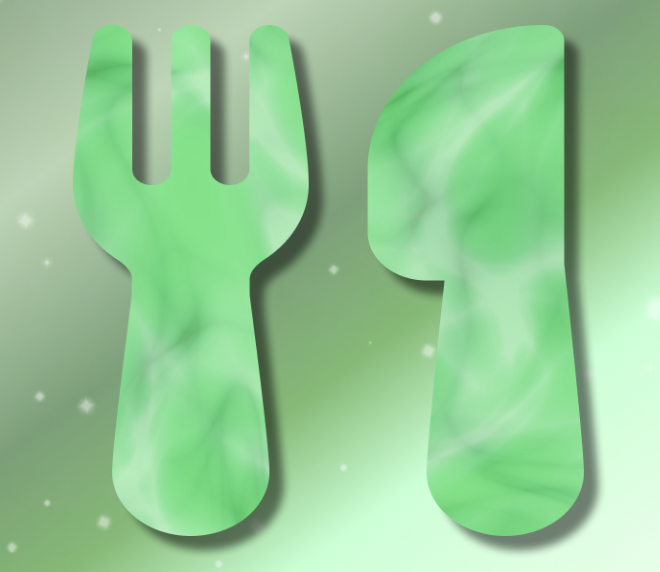

About 95% of Mars' air is carbon dioxide, which astronauts can't breathe. Oxygen has to be made or recycled.

During a big dust storm in 2022, NASA switched off InSight's seismometer to save power, then turned it back on when the sky cleared.

In August 2015, astronauts on the ISS became the first to eat vegetables grown in space: red romaine lettuce.